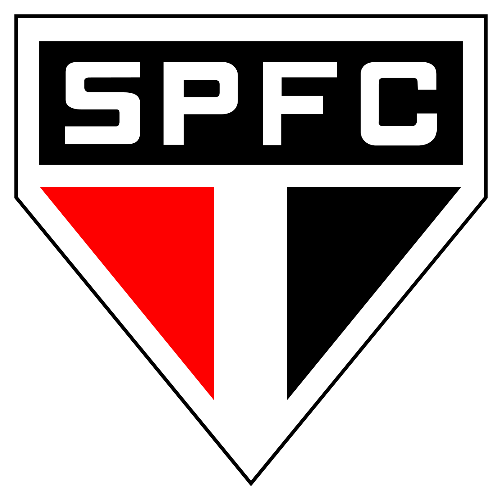

São Paulo Futebol Clube
O maior time do Brasil

O Maior Time Do País
Atualizado em 11/05/2025
Como se deu a história do SPFC?
O São Paulo Futebol Clube foi fundado oficialmente em 15 de janeiro de 1930, resultado da fusão entre jogadores
o Clube Atlético Paulistano, que não aceitavam o profissionalismo no futebol,
e a Associação Atlética das Palmeiras, que possuía um estádio, mas enfrentava dificuldades financeiras. Essa união deu origem ao SPFC,
que rapidamente se destacou no cenário esportivo brasileiro.
Ao longo da história, o São Paulo se consolidou como um dos clubes mais vitoriosos do Brasil,
conquistando diversos títulos nacionais e internacionais, como a Libertadores, o Mundial de Clubes e vários Campeonatos Brasileiros.
Além do futebol, o clube também brilhou em outros esportes, como o atletismo e o boxe, com nomes como Adhemar Ferreira da Silva e Éder Jofre.
Fora de campo, o São Paulo foi pioneiro na construção de infraestrutura esportiva, como o estádio MorumBIS (antigo Morumbi) e centros de
treinamento de referência.
O clube é conhecido como “O Soberano”, pela grandeza de sua história e conquistas.
Condecorações
MAIO/2025
| Títulos nacionais | 42 títulos oficiais principais |
| Títulos Internacionais | 12 conquistas deste porte |
| Prêmios | 64 prêmios oficiais para jogadores |
| Valor do clube | 500M de Euros€ |
O que é o São Paulo Futebol Clube?
O São Paulo Futebol Clube, conhecido como SPFC, é um dos clubes de futebol mais tradicionais e vitoriosos do Brasil e do mundo.
Fundado em 1930, o clube tem uma rica história repleta de conquistas e ídolos. O SPFC é reconhecido por sua forte base de torcedores,
infraestrutura moderna e compromisso com a formação de jovens talentos. O clube já conquistou diversos títulos nacionais e internacionais,
incluindo a Copa Libertadores e o Mundial de Clubes da FIFA. Além do futebol, o SPFC também se destaca em outras modalidades esportivas,
como vôlei e basquete. Com uma história marcada por grandes jogadores e momentos memoráveis, o São Paulo é considerado um dos gigantes do futebol brasileiro.
Curiosidades sobre o SPFC
1.Maior goleiro artilheiro do mundo:O lendário Rogério Ceni marcou 131 gols em sua carreira, todos jogando pelo São Paulo, tornando-se o goleiro que mais fez gols na história do futebol.
2.Tricampeão mundial: O São Paulo é o único clube brasileiro tricampeão da Copa do Mundo de Clubes/FIFA: venceu em 1992, 1993 e 2005, enfrentando gigantes como Barcelona, Milan e Liverpool.
3.Estádio próprio gigante: O clube é dono do MorumBIS (ex-Morumbi), o maior estádio particular do Brasil, com capacidade para mais de 66 mil torcedores.
4.Berço de atletas olímpicos: Além do futebol, o SPFC teve atletas de destaque como Adhemar Ferreira da Silva, bicampeão olímpico e recordista mundial no salto triplo.
5.Camisa tricolor com significado: As cores da camisa (vermelho, branco e preto) representam a fusão dos clubes que deram origem ao São Paulo: Paulistano (vermelho), Palmeiras A.A. (preto), e a paz e união (branco).